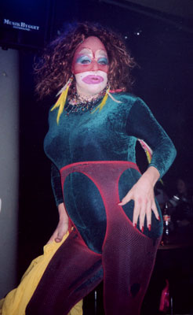

| 16. Januar 2003 |
SnöGlam
Furstligt på QX-festen i Åre
Scandinavian Gay Days i Åre hölls den 9:onde till 12:e januari. För tredje året var det skidtävlingar, fester och ett alternativt umgänge för homofolket och nyfikna.
Danska Ramona Macho, Frøken Verden 2000, var på besök.

Foto/Ill: Dominic PlazaText: Jon Voss
Reference:
www.qx.se/nyheter/artikel.php?artikelid=2283
Print denne side